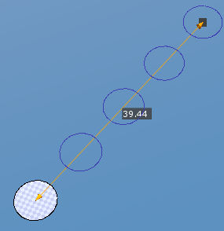
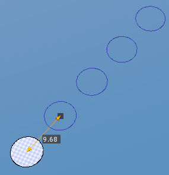
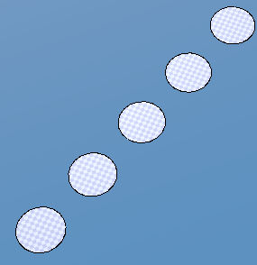
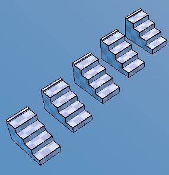
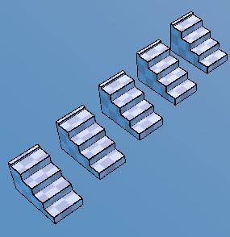

Clone Tool ¶
{kind=link}
Clones the selected polygons along the line drawn by dragging a mouse. Pressing SPACE confirms the clone action and ESC cancels it.
Steps - Single Clone¶
Enter Clone tool.
Point at a polygon you want to clone by putting the mouse over it if polygons are not selected when this tool is activated.
Drag the mouse to draw a line. You can make sure that the cloned polygons will be aligned with the line.
Adjust
Number,DistanceandArrangementinPropertiesif necessary.Press
SPACEor click onConfirmbutton to confirm, or PressESCor click onCancelbutton to cancel.
Steps - Multi Clone¶
Select Several polygons using
Polygon ToolEnter Clone tool.
Drag the mouse to draw a line. You can make sure that the cloned polygons will be aligned with the line.
Adjust
Number,DistanceandArrangementinPropertiesif necessary.Press
SPACEor click onConfirmbutton to confirm, or PressESCor click onCancelbutton to cancel.
Interface¶
LMB DragDraws an edge where the clones will be placed.
Properties¶
- Number
The number of clones
- Distance
The distance of an edge where the clones will be placed.
- Arrangement
Divide- Creates clones arranged evenly between the starting point and the end point of the edge.Multiply- Makes clones along the edge. The distance between the clones is the value of Distance property in Properties.
 Arrangement property is Divide
{kind=link}
 Arrangement property is Multiply
{kind=link}
 This is the result of the upper cases.
{kind=link}
 
Multi Polygons Clone
{kind=link}